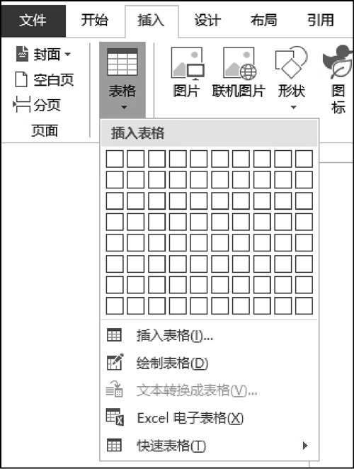
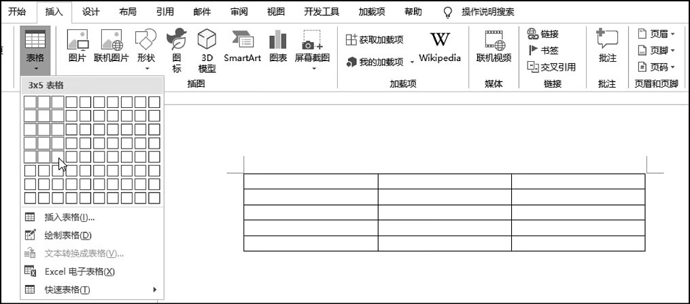
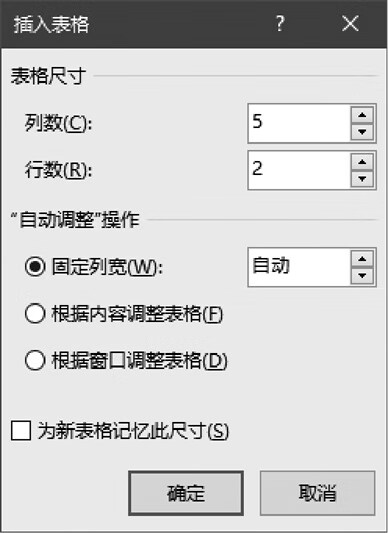
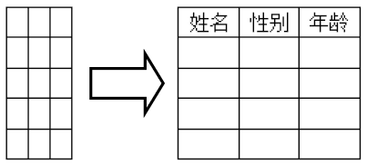
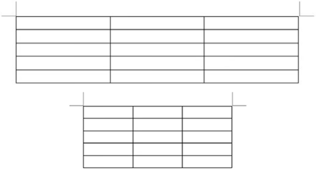
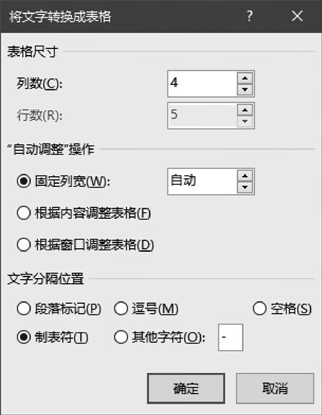
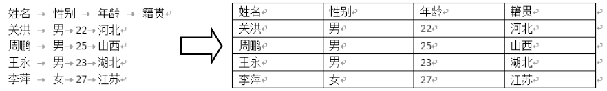

首页 > 编程笔记
Word插入表格（3种方法）
在 Word 中插入表格有6种方法，在功能区的【插入】选项卡中单击【表格】按钮，在弹出的列表中包含创建表格的 6 种方法所对应的命令，如图1所示。6 种方法的简要说明如表1所示。
下面将介绍其中较为常用的3种方法。
与此同时，文档中也会显示一个表格的预览样式，如图2所示。
如果对该表格满意，可以单击鼠标左键创建该表格。
在【插入表格】对话框中单击【确定】按钮之前，可以通过以下几项设置表格的自动调整功能。
例如，在图5中，左侧的表格是在 16 开的页面中创建的，右侧的表格是在 32 开的页面中创建的，无论页面多大，选中【根据窗口调整表格】单选按钮后创建的表格的宽度始终与版心相同。
选择该命令，打开图6所示的对话框，Word 会自动判断所选文本转换为表格时可能包含的列数和行数，并根据文本中包含的分隔符类型自动选择相应的分隔符。如果 Word 自动选择的分隔符不正确，用户可以在对话框中重新选择或输入所需的分隔符。
设置完成后，单击【确定】按钮，即可将选择的文本转换为表格。图7所示为将使用制表符分隔的文本转换为表格的效果。

图1：Word 插入表格的相关命令
图1：Word 插入表格的相关命令
| 命令 | 方法 | 特点 |
|---|---|---|
| 拖动网格 | 使用鼠标拖动列表上方的网格创建表格 | 只能创建最多8行、10列的表格 |
| 插入表格 | 在对话框中通过指定行、列数来创建表格 | 可以设置表格的自动调整功能 |
| 绘制表格 | 通过手动绘制表格的边框线创建表格 | 可以创建结构灵活的表格，但不够精确 |
| 文本转换成表格 | 将包含特定分隔符的文本转换为表格 | 可以将普通文本快速转换为表格 |
| Excel电子表格 | 插入Excel工作表 | 可以使用Excel提供的功能处理数据 |
| 快速表格 | 选择一种预置的表格样式来创建表格 | 创建带有预置文本和外观格式的表格 |
下面将介绍其中较为常用的3种方法。
1. 通过拖动网格创建表格
单击【表格】按钮，在弹出的列表的上方有一些网格，在这些网格上移动鼠标指针时，列表的顶部会显示类似“3×5表格”的信息，它表示当前鼠标指针划过的网格范围，即将创建的表格的大小，第一个数字表示列数，第二个数字表示行数。与此同时，文档中也会显示一个表格的预览样式，如图2所示。

图2：移动鼠标指针预览表格
图2：移动鼠标指针预览表格
如果对该表格满意，可以单击鼠标左键创建该表格。
2. 通过指定行、列数创建表格
在图1所示的列表中选择【插入表格】命令，将打开【插入表格】对话框，如图3所示，在【列数】和【行数】两个文本框中分别输入要创建的表格包含的列数和行数，然后单击【确定】按钮，即可创建指定列数和行数的表格。

图3：【插入表格】对话框
图3：【插入表格】对话框
在【插入表格】对话框中单击【确定】按钮之前，可以通过以下几项设置表格的自动调整功能。
固定列宽
选中该单选按钮后，创建的表格的列宽将以“厘米”为单位，表格大小不随文档版心的宽度或表格的内容的多少而自动调整。根据内容调整表格
选中该单选按钮后，创建的表格的大小将根据表格中的内容多少而自动调整，如图4所示。由于刚创建的表格中不包含任何内容，因此选中该单选按钮后创建的初始表格很小。

图4：选中【根据内容调整表格】单选按钮后创建的表格
图4：选中【根据内容调整表格】单选按钮后创建的表格
根据窗口调整表格
选中该单选按钮后，创建的表格的宽度将与文档的版心相同，当调整左、右页边距时，表格的宽度会随之改变。例如，在图5中，左侧的表格是在 16 开的页面中创建的，右侧的表格是在 32 开的页面中创建的，无论页面多大，选中【根据窗口调整表格】单选按钮后创建的表格的宽度始终与版心相同。

图5：选中【根据窗口调整表格】单选按钮后创建的表格
图5：选中【根据窗口调整表格】单选按钮后创建的表格
提示：每次打开【插入表格】对话框时，在【列数】和【行数】文本框中将显示预置的数字“5”和“2”。如需改变预置的列数和行数，则可以在【列数】和【行数】两个文本框中输入所需的数字，然后选中【为新表格记忆此尺寸】复选框，最后单击【确定】按钮。
3. 通过转换文本创建表格
在图1所示的列表中选择【文本转换成表格】命令，可以将带有分隔符号的文本转换为表格。只有在文档中选择要转换的文本后，【文本转换成表格】命令才会变为可用状态。选择该命令，打开图6所示的对话框，Word 会自动判断所选文本转换为表格时可能包含的列数和行数，并根据文本中包含的分隔符类型自动选择相应的分隔符。如果 Word 自动选择的分隔符不正确，用户可以在对话框中重新选择或输入所需的分隔符。

图6：【将文字转换成表格】对话框
图6：【将文字转换成表格】对话框
设置完成后，单击【确定】按钮，即可将选择的文本转换为表格。图7所示为将使用制表符分隔的文本转换为表格的效果。

图7：Word 将文本转换为表格
图7：Word 将文本转换为表格
关注公众号「站长严长生」，在手机上阅读所有教程，随时随地都能学习。内含一款搜索神器，免费下载全网书籍和视频。

微信扫码关注公众号